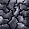

Copyright 2000 Michael Speck
Released under GPL
Marbles is very similiar to Atomix and was heavily inspired by it. Goal is to create a more or less
complex figure out of single marbles within a time limit to reach the next level.
Sounds easy? Well, there is a problem: If a marble starts to move it will not stop until it hits a
wall or marble.
There are also some obstacles:
If a marble moves on such an arrow it will change its direction to the direction the arrow points at.
If a marble comes from the direction the arrow points at it will stop before the arrow.
These yellow and black stripes mean this tile can neither be accessed from these sides nor from the side the
arrow points at. So there is only one way to get past this obstacle.
If a marble encounters such a teleport it will teleport to the second one of the same color and keep on moving
in the same direction.

Such a crumbling wall takes one, two or three hits before it vanishes completely. The number of hits left is
displayed by a small digit in the lower right corner of the crumbling wall.
You play against a move limit and you'll gain the following score when you finished a level:
| Difficulty | Level Bonus | Bonus per remaining move |
| Easy | 500 | 25 |
| Normal | 1000 | 50 |
| Hard | 2000 | 100 |
| Brainstorm | 5000 | 250 |
If you run Marbles the very first time only one profile (named 'Michael') exists. You probably want to play with
a profile named like you. How to create and use a new profile is described in Menu.
Levels are grouped in chapters and chapters are grouped in levelsets. Right now, Marbles comes with just one
levelset called 'Original' containing three chapters with ten levels each. Of course, you can create your own levelsets.
You have unlimited tries to solve a level! The order in which you solve levels of one chapter does not matter! There are small lights in the right lower
corner of the screen of one of the following colors: red(cannot be accessed), orange(can be accessed, not solved yet) and
green (already solved, you will not gain any score for solving it again). Just click on a light and confirm
to change the level. To enter a new chapter ALL previous levels have to be solved.
Use your mouse to:
Select a marble: Left-click on it. (You can simply change selection by clicking on another marble)
Release a marble: Right-click anywhere.
Move a marble: When you selected a marble move the mouse pointer into the wanted direction. If movement is
possible the mouse pointer will change into a big arrow pointing into the direction. Then simply left-click.
Change the level: As written in 'How To Play' these lights in the right lower corner
represent the levels. Simply left-click on a green or orange one and confirm the change. (If you choose the
current level (white frame) this will be the same as restarting this level.)
Confirm: When you quit, restart or change the level you will be asked to confirm first by pressing 'y' or
'n'. You can do this with left-click(yes) or right-click(no) as well.
Important keys:
[Escape]: Quits the game after confirmation.
[r]: Restarts level after confirmation.
[p]: Pauses game.
[Space]: If you think your last movement was wrong you can restore the old position by pressing Space as
long as the marble did not hit a crumbling wall (can be redefined in options/controls).
You can use the cursor keys to move a marble (can also be redefined)!
If your difficulty is 'Training' press a movement key or left mouse button while a marble is moving to 'warp' it to its destination!
As described in 'How To Play' levels are grouped in chapters and chapters are grouped in levelsets. A levelset is a file in Marbles' subdirectory 'levels' without any extension. When finished with the creation you must become root and copy it to the install directory usually /usr/local/share/games/marbles/levels (if you installed marbles). That's it. Of course, you must test and change a lot while developing so you should extract Marbles' source somewhere temporary, run configure with the option --disable-install which allows you to work in Marbles' temporary 'levels' directory where you can simply edit and test your levelset. (the 'levels' directory should already contain a file called 'Original').
Once again step by step:
When testing your levelsets you should use a separate profile (e.g. called 'Testing').
If you start creating a new levelset with, say, ten levels per chapter but you have made only one level so
far Marbles will stop parsing the file and ask for confirmation if you try to start this levelset (press 'y' or
left-click). All levels before the error can be played without problems but because Marbles stopped parsing
further levels does not exist. Changing to such a non-existing level might result in an infinite loop. But when
you are finished with creating your levelset no errors or warnings should occur! (If you run Marbles in an xterm
errors and warnings will be displayed.)
If you have problems writing the file, take a look at 'Original'.
How to write the file:
Syntax:
<subsection>
starts a subsection (e.g. <level>)
</subsection>
ends a subsection (e.g. </level>)
(comment)
such a comment must not contain any '<' or '>' or ';'
normal entry;
(e.g. in subsection map of a level: ...a 1 aa...;)
variable = value;
(e.g. author = Michael Speck;)
Normal entries and initializations have to end with a semicolon! Subsections and comments must not end with a semicolon!
Each levelset starts with a subsection called 'info' containing information about the number of levels per
chapter and the number of chapters.
<info>
levels = levels_per_chapter; (maximum is 10)
chapters = chapter_number; (maximum is 10)
</info>
It follows the definition of each chapter containing information about name, author, used graphics set, whether this
chapter is open from the very beginning and definition of each level (number of levels as you defined in
<info>). Usually only the first chapter is open for playing from the very beginning.
<chapter>
name = Name Of The Chapter;
author = Your Name;
gfx_set = GfxSet; (either 'stone' or 'metal' or 'wood'; e.g. gfx_set = stone)
open = Open?; (1 = open; 0 = all previous levels have to be completed first)
...levels
</chapter>
A level is defined as follows. It contains information about the time (in seconds), size of the map, size of
the figure and two subsections with the figure and the map.
<level>
time = time_in_seconds; (e.g. time = 90;)
map_w = map_width; (ranges between 4 and 13)
map_h = map_height; (ranges between 4 and 14)
fig_w = figure_width; (ranges between 2 and 10)
fig_h = figure_height; (ranges between 1 and 10)
<figure>
...
</figure>
<map>
...
</map>
</level>
A figure tile is either a marble ID from 0 to 9 or [Space] for no marble.
Example: <figure> 1 2 ; 23454; 1 2 ; </figure>
Valid map tiles are:
'a', 'b', 'c' - different walls
'A', 'B', 'C' - crumbling walls ('C' three, 'B' two, 'A' one hit)
[Space] - floor
'.' - background
'u','d','r','l' - arrows without barriers (up, down, right, left)
'U','D','R','L' - arrows with barriers (up, down, right, left)
'w','x','y','z' - teleports of different colors
'0'..'9' - marbles
Example: <map> ....aaaa; ..aaa 2a; .aa1 xa; aa u aa; a 2 xa.; aaaaaaa.; </map>
So this is the structure of a levelset:
<info>
...
</info>
<chapter>
...
<level>
...
<figure>
...
</figure>
<map>
...
</map>
</level>
...(more levels)
</chapter>
...(more chapters)
Once again: Taking a look at 'Original' might help you a lot...
ToC